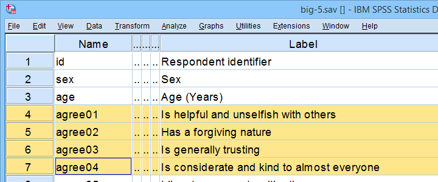
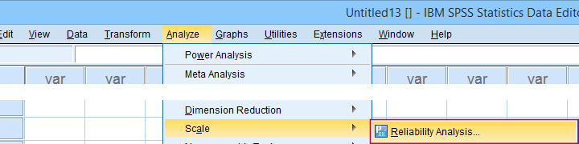
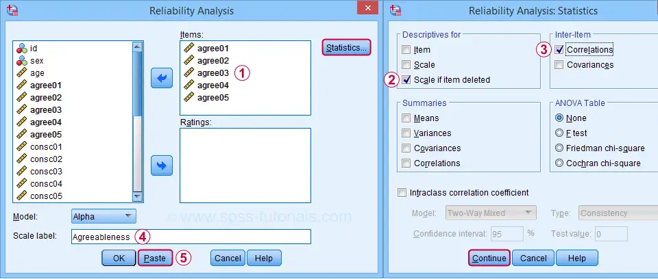
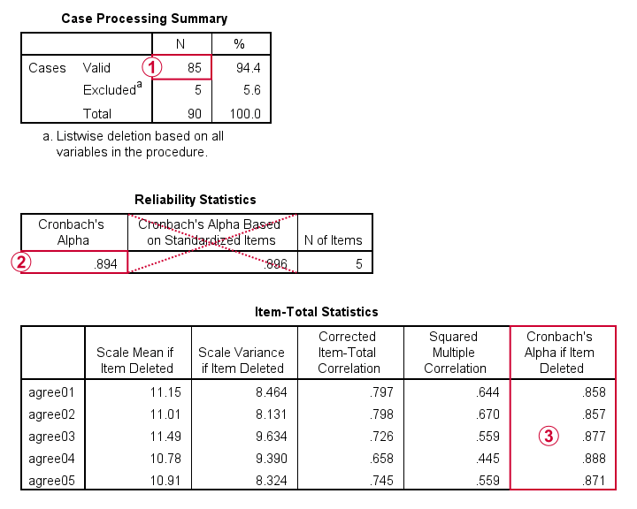
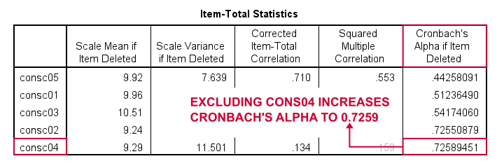
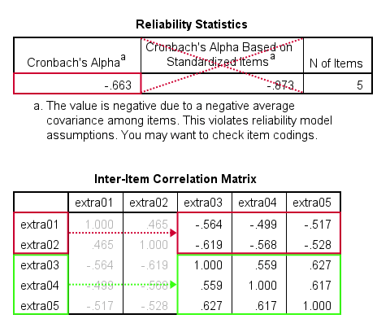
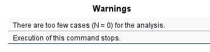
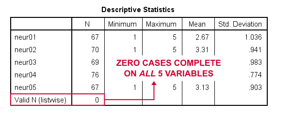
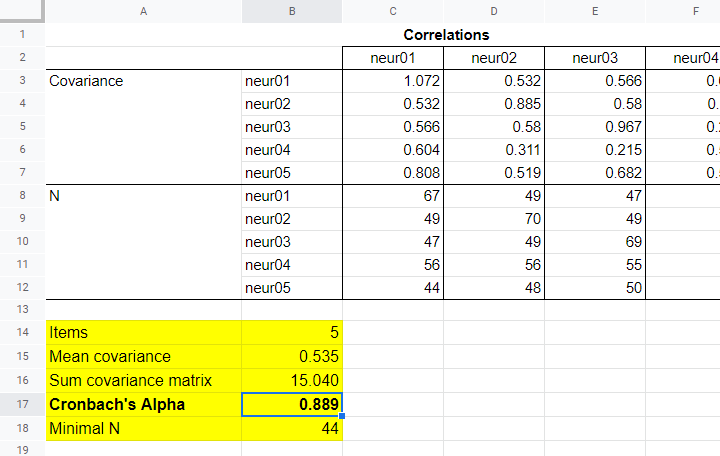
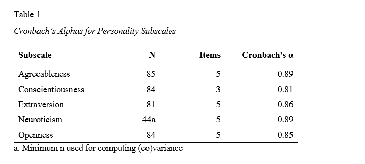

在 SPSS 中计算 Cronbach’s Alpha
作者：Ruben Geert van den Berg，发表于 因子分析 栏目下
目录
- Cronbach’s Alpha - 快速定义
- SPSS Cronbach’s Alpha 输出结果
- 通过移除条目来提高 Cronbach’s Alpha
- Cronbach’s Alpha 为负数
- 分析的案例太少 (N = 0)
- APA 格式报告 Cronbach’s Alpha
介绍
某心理学系想要检验一份性格测试的信度（reliability）。他们招募了 N = 90 名学生填写该测试。收集到的数据存储在 big-5.sav 文件中，部分数据如下所示。

正如变量名所示，该测试试图测量“五大人格”特征。对于其他数据文件，通常使用 因子分析 来确定哪些变量测量哪些子量表。
总之，我们的主要研究问题是：这些 5 个子量表的信度如何，由 Cronbach’s Alpha 指示？但首先：Cronbach’s Alpha 到底是什么？
Cronbach’s Alpha - 快速定义
Cronbach’s Alpha 是指 2 个或更多变量的总和测量单个潜在特征的程度。更准确地说，Cronbach’s Alpha 是这种总和得分的方差中，可以由单个特征解释的比例。也就是说，它是一个总和得分 可靠地 测量某些东西的程度，以及一组条目 一致地 测量“相同事物”的程度。
因此，Cronbach’s Alpha 被称为 信度 或 内部一致性 的度量。最常见的经验法则是：
- Cronbach’s Alpha ≥ 0.80 是 良好 的，并且
- Cronbach’s Alpha ≈ 0.70 可能仅仅是 可接受 的。
SPSS 信度分析对话框
在 SPSS 中，我们可以通过 A nalyze（分析）  Sc a le（量表） R eliability Analysis…（信度分析…）来获得 Cronbach’s Alpha，如下图所示。
Sc a le（量表） R eliability Analysis…（信度分析…）来获得 Cronbach’s Alpha，如下图所示。

为了分析第一个子量表，宜人性（agreeableness），我们按照下图所示填写对话框。

点击 “粘贴（Paste）” 将会在 语法 窗口生成如下代码。让我们运行它。
***CRONBACH AGREEABLENESS.
**
RELIABILITY
/VARIABLES=agree01 agree02 agree03 agree04 agree05
/SCALE('Agreeableness') ALL
/MODEL=ALPHA
/STATISTICS=CORR
/SUMMARY=TOTAL.SPSS Cronbach’s Alpha 输出结果 I

 对于信度分析，SPSS 仅提供 缺失值 的列表删除（listwise exclusion）：所有结果仅基于 N = 85 个案例，这些案例在我们的 5 个分析变量或“条目”上没有缺失值。
对于信度分析，SPSS 仅提供 缺失值 的列表删除（listwise exclusion）：所有结果仅基于 N = 85 个案例，这些案例在我们的 5 个分析变量或“条目”上没有缺失值。
 Cronbach’s Alpha = 0.894。通常可以忽略基于标准化条目的 Cronbach’s Alpha：在计算量表得分之前，很少（如果曾经）将变量标准化为 z-scores。
Cronbach’s Alpha = 0.894。通常可以忽略基于标准化条目的 Cronbach’s Alpha：在计算量表得分之前，很少（如果曾经）将变量标准化为 z-scores。
 最后，从（子）量表中排除一个变量可能会增加 Cronbach’s Alpha。但在此表中并非如此：对于每个条目，“删除条目后的 Cronbach’s Alpha（Cronbach’s Alpha if Item Deleted）”都低于基于所有 5 个条目的 α = 0.894。
最后，从（子）量表中排除一个变量可能会增加 Cronbach’s Alpha。但在此表中并非如此：对于每个条目，“删除条目后的 Cronbach’s Alpha（Cronbach’s Alpha if Item Deleted）”都低于基于所有 5 个条目的 α = 0.894。
我们现在对我们的第二个子量表，尽责性（conscientiousness）运行完全相同的分析。这样做会产生以下语法。
***CRONBACH CONSCIENTIOUSNESS.
**
RELIABILITY
/VARIABLES=consc01 consc02 consc03 consc04 consc05
/SCALE('Conscientiousness') ALL
/MODEL=ALPHA
/STATISTICS=CORR
/SUMMARY=TOTAL.通过移除条目来提高 Cronbach’s Alpha
对于尽责性子量表，Cronbach’s Alpha = 0.658，这相当差。但是，请注意，对于 consc02 和 consc04，删除条目后的 Cronbach’s Alpha = 0.726。

由于删除任一条目都应导致 α ≈ 0.726，因此我们不确定应首先删除哪个条目。找到答案的两种方法是：
- 增加小数位数，或者（更好）
- 按最后一列对表格进行排序。
您可能已经看到，我们已经使用以下 OUTPUT MODIFY 命令完成了这两项操作：
***Increase decimal places for Cronbach's alpha if item deleted.
**
output modify
/select tables
/tablecells select = ['Cronbach''s Alpha if Item Deleted'] format = 'f10.8'.
***Sort item-total statistics by Cronbach's alpha if item deleted.
**
output modify
/select tables
/table sort = collabel('Cronbach''s Alpha if Item Deleted').事实证明，删除 consc04 比删除 consc02 略微增加 alpha。首选的方法是简单地复制粘贴之前的 RELIABILITY 命令，从中删除 consc04 并重新运行它。
***REMOVE CONSC04.
**
RELIABILITY
/VARIABLES=consc01 consc02 consc03 consc05
/SCALE('Conscientiousness') ALL
/MODEL=ALPHA
/STATISTICS=CORR
/SUMMARY=TOTAL.这样做之后，Cronbach’s Alpha = 0.724。它不是 完全 预测的 0.726，因为删除 consc04 会将样本量增加到 N = 84。请注意，如果也删除 consc02，我们可以将 α 进一步增加到 0.814。以下语法正是这样做的。
***REMOVE CONSC02.
**
RELIABILITY
/VARIABLES=consc01 consc03 consc05
/SCALE('Conscientiousness') ALL
/MODEL=ALPHA
/STATISTICS=CORR
/SUMMARY=TOTAL.请注意，如果我们通过 consc01、consc03 和 consc05 的总和或平均值来计算我们的尽责性子量表，则 Cronbach’s Alpha = 0.814。既然这样没问题，我们就完成了这个子量表。
让我们继续下一个子量表：外向性（extraversion）。我们通过对 extra01 到 extra05 运行完全相同的分析来实现此目的，这将产生以下语法。
***CRONBACH EXTRAVERSION.
**
RELIABILITY
/VARIABLES=extra01 extra02 extra03 extra04 extra05
/SCALE('Extraversion') ALL
/MODEL=ALPHA
/STATISTICS=CORR
/SUMMARY=TOTAL.Cronbach’s Alpha 为负数
如下图所示，外向性子量表的 Cronbach’s Alpha = -0.663。这意味着项目之间的一些 相关性 为负数（见下方的第二个表格）。

所有外向性项目的编码方式都相似：它们具有相同的值标签，所以这不是问题。问题是，一些项目测量的是与其他项目相反的内容，如下所示。

解决方案是简单地 反向编码 这些“负面项目”：我们 RECODE 这 2 个项目，并使用以下语法调整它们的值/变量标签。
***REVERSE CODE EXTRA01 AND EXTRA02.
**
RECODE extra01 extra02 (1.0 = 5.0)(2.0 = 4.0)(3.0 = 3.0)(4.0 = 2.0)(5.0 =
1.0).
EXECUTE.
VALUE LABELS
/extra01 5.0 'Disagree strongly' 4.0 'Disagree a little' 3.0 'Neither agree
nor disagree' 2.0 'Agree a little' 1.0 'Agree strongly' 6 'No answer'
/extra02 5.0 'Disagree strongly' 4.0 'Disagree a little' 3.0 'Neither agree
nor disagree' 2.0 'Agree a little' 1.0 'Agree strongly' 6 'No answer'.
VARIABLE LABELS
extra01 'Tends to be quiet (R)'
extra02 'Is sometimes shy, inhibited (R)'.现在重新运行与之前完全相同的信度分析，得到外向性子量表的 Cronbach’s Alpha = 0.857。
因此，让我们继续神经质（neuroticism）子量表。以下语法对 neur01 到 neur05 运行我们的默认信度分析。
***CRONBACH NEUROTICISM.
**
RELIABILITY
/VARIABLES=neur01 neur02 neur03 neur04 neur05
/SCALE('ALL VARIABLES') ALL
/MODEL=ALPHA
/STATISTICS=CORR
/SUMMARY=TOTAL.分析的案例太少 (N = 0)
请注意，我们的最后一个命令没有产生任何有用的表格。我们只是收到警告：
Warnings（警告） There are too few cases (N = 0) for the analysis.（分析的案例太少 (N = 0)。） Execution of this command stops.（命令执行停止。）
如下图所示。

此问题的 3 个最可能的 原因 是：
- 一个或多个变量仅包含缺失值；
- 不正确的 FILTER 筛选掉数据中的 所有 案例；
- 缺失值分散在多个分析变量中。
一个非常快速的解决方法是运行一个最小的 DESCRIPTIVES 命令，如 descriptives neur01 to neur05。这样做之后，我们了解到每个变量的 N ≥ 67，但有效 N（列表删除）= 0。

因此，我们真正想要的是使用成对排除缺失值（pairwise exclusion of missing values）。由于某些愚蠢的原因，SPSS 中未包含此功能。但是，手动执行它并不像看起来那么难。
使用成对排除缺失值计算 Cronbach’s Alpha
我们将从 Cronbach’s Alpha 的公式开始，该公式为：
\[Cronbach’s\;\alpha = \frac{k^2 \overline{S_{xy}}}{\Sigma S^2_x + 2 \Sigma S_{xy}}\]
其中：
- \(k\) 表示项目的数量；
- \(S_{xy}\) 表示每对不同项目之间的 协方差；
- \(S^2_x\) 表示每个项目的样本方差。
请注意，成对协方差矩阵包含此公式使用的所有统计信息。它很容易通过以下 回归 语法获得：
***COMPUTE COVARIANCE MATRIX FOR NEUR01 THROUGH NEUR05.
**
regression
/missing **pairwise**
/dependent neur01
/method enter neur02 to neur05
/descriptives n **cov** .接下来，我们将结果复制到 这个 Googlesheet 中。最后，一些非常简单的公式告诉我们 α = 0.889。

现在，我们应该为此子量表报告哪个样本量？我建议您在此处遵循成对回归的惯例，并报告导致此分析 N = 44 的最小 成对 N。同样，请注意，查找单元格块中最小值的公式非常简单。
APA 格式报告 Cronbach’s Alpha
下表显示了如何在 APA 格式 中报告所有子量表的 Cronbach’s Alpha。

该表包含 big-5.sav 中的实际结果，因此您可以验证您的分析是否与我的分析相符。创建此表的最简单方法是手动将您的最终结果复制粘贴到 Excel 中。这样可以轻松调整小数位数和样式等内容。